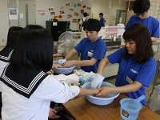
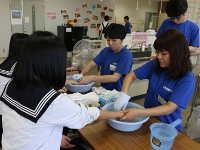

広島共立大学
Hiroshima Kyouritu University
Tel: 082-000-0000
 


学部紹介
医療経営学部
医療経営学部は、主に、「経営学」と「医療学」を学び、総合病院だけでなく、企業や公務員へと進む事が出来ます。高齢化の加速など様々な難題に立ち向かう学問として注目されています。
病院だけでなく健康産業に参入する企業、金融機関、地域行政からも期待されて、一般企業や公務員など進路の幅が広い学部です。
機能回復学部
リハビリテーションとは一般的には、リハビリと呼ばれていますが、リハビリテーションとは、「全人間的権利の回復」を意味して障害のある方を全人的に捉え、障がいの種類や程度に関わらず、
身体的にも社会的にも、精神的にも自立した有意義な人生を歩んでいく手助けをするものであり、その手助けに必要なことを学ぶ学部です。
理学療法学科
理学療法学科は、理学療法士という、主に、リハビリテーションを必要とする人々を支えるという仕事に従事する「責任」と「誇り」を持って理学療法の発展に尽くし、広く社会に貢献出来る人材を養成しています。
作業療法学科
作業療法学科は、作業療法士という、主に身体障害だけではなく、精神障害疾患の方や小児からから高齢者まで幅広い対象者の生活上の困難に対応するリハビリテーション職種であり、医師・看護師などとともに国家資格にともづいた医療職になります。
医療工学部
医療工学部は、主に工学の知識を蓄えて、医学へ応用しようとする学問を学習する学科です。主に検査機器や人工臓器、生命維持管理装置などを開発する仕事があります。
現在注目されている技術の一つに、医療用ロボット（手術ロボット）で、ロボットにより手術を行う事が出来るかどうかを、医用工学に携わる学者等が研究し、開発実験を実施しています。